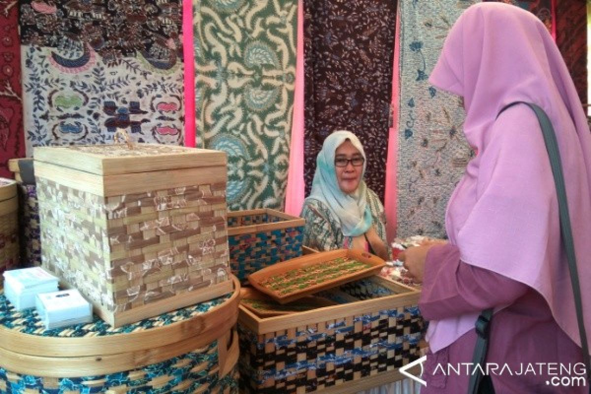

.png)



SDGs adalah salah satu kerja sama internasional yang dilaksanakan oleh berbagai negara termasuk Indonesia. Pada September 2015, dalam sidang umum persatuan bangsa-bangsa yang diadakan di New York, Kepala Negara dan perwakilan dari 193 negara telah menyepakati Deklarasi Agenda 2030 untuk Pembangunan Berkelanjutan. Agenda tersebut merupakan sebuah rencana aksi untuk People, Planet, and Prosperity serta untuk penguatan perdamaian universal, yang mencantumkan 17 tujuan dan 169 target yang terukur. Indonesia, salah satu negara yang berkomitmen tinggi melaksanakan dan mencapai TPB/SDGs. Sejak dideklarasikan pada bulan September tersebut, Indonesia telah terlibat aktif dalam berbagai forum global. Persiapan dan pelaksanaan TPB/SDGs dilakukan secara inklusif (upaya untuk menempatkan diri dalam sudut pandang orang lain saat memahami sebuah masalah) dengan melibatkan berbagai macam pihak. Dalam pelaksanaannya, Indonesia memiliki beberapa prinsip, yakni: universal development principles, integration, no one left behind, dan inclusive principals. (https://www.icctf.or.id/sdgs/?authuser=0).
Dari 17 tujuan SDGs, terdapat 1 yang menonjol bagi saya, yaitu gender equality atau kesetaraan gender. Topik ini sangat menonjol bagi saya karena di dunia masih banyak orang yang berpikir bahwa laki-laki memiliki kepentingan yang lebih tinggi dibandingkan dengan perempuan dimana hal tersebut sangatlah tidak benar karena kita semua manusia baik laki-laki maupun perempuan jadi seharusnya setiap orang diperlakukan dengan sama walaupun berbeda gender. Dalam konteks ini, Indonesia sudah melaksanakan beberapa hal untuk mencapai kesetaraan gender. Satu kasus yang sering terjadi di Indonesia maupun di luar adalah kekerasan terhadap perempuan. Untuk menghilangkan segala bentuk kekerasan terhadap perempuan di ruang publik dan pribadi, perdagangan manusia dan eksploitasi seksual, serta berbagai jenis eksploitasi lainnya, Indonesia sudah melaksanakan 2 hal, yaitu meningkatkan perlindungan perempuan, termasuk pekerja migran dari kekerasan dan Tindak Pidana Perdagangan Orang (TPPO), kedua adalah menurunnya prevalensi kekerasan terhadap perempuan usia 15-64 tahun di 12 bulan terakhir. Tahun dasar 2016: 9,4% (Sumber data: Survei Pengalaman Hidup Perempuan Nasional 2016). (https://drive.google.com/file/d/1mlaMUkQLeYuqCdz54eYfz1YLtAQOCbOS/view?usp=classroom_web&authuser=0).
Salah satu contoh Indonesia meraih kesetaraan gender adalah ketika mereka melaksanakan kerjasama dengan Iran (https://www.kemenpppa.go.id/index.php/page/view/MjA5OQ==). Pada tahun 2019 di Semarang (10/4), diujar oleh Kepala Biro Perencanaan dan Data, Fakih Usman bahwa pemerintah Indonesia melalui Kementerian Pemberdayaan Perempuan dan Perlindungan Anak (Kemen PPPA) berkomitmen dalam meningkatkan pemberdayaan perempuan baik di tingkat nasional, regional maupun internasional, serta aktif terlibat dalam asosiasi, hubungan kerjasama dan kemitraan dengan negara-negara di dunia. Demi mewujudkan kesetaraan gender, menyuarakan suara perempuan dan anak sebagai kelompok rentan serta memastikan tersedianya lingkungan hidup yang ramah bagi anak. Fakih Usman juga berharap dengan adanya kunjungan tersebut, Indonesia dan Iran dapat memperkuat hubungan kerjasama yang telah terjalin selama ini. Serta dapat menindaklanjuti pertemuan tersebut dengan program yang positif dan inovatif untuk meningkatkan komitmen dalam pemberdayaan perempuan, ketahanan keluarga, dan perlindungan anak sesuai MoU yang sudah disepakati kedua negara tersebut pada Juli 2018. Pada hari ke-3, 7 delegasi dari Iran yang dipimpin oleh Penasehat Senior Wakil Presiden Bidang Perempuan dan Keluarga, Zahra Javaherian melakukan dialog bersama perwakilan Asosiasi Pendamping Perempuan Usaha Kecil (ASPPUK) untuk saling berbagi informasi dan pengalaman terkait proses pendampingan bagi [perempuan pelaku IR dan usaha mikro (UM) maupun dalam bidang pemberdayaan ekonomi secara menyeluruh di Indonesia. Dalam pertemuan tersebut, dikatakan bahwa para perempuan di Iran menyimpan sisa dana internal sehingga mereka bisa mendirikan koperasi dan terkumpul hingga 6 Milyar pada 2000 orang. Pada sesi dialog dengan Ikatan Wanita Pengusaha Indonesia Pusat (IWAPI), delegasi Iran tertarik untuk mengetahui lebih jauh proses pembuatan produk kerajinan tangan dari Cilacap. Dalam dialog tersebut, Iran memberitahu tentang kerjasamanya dengan China dalam pembelian dan transaksi dan ingin membantu Indonesia dalam menjual produk Cilacap tersebut dimana keuntungan tersebut akan digunakan untuk pemberdayaan ekonomi perempuan di Indonesia. Disimpulkan dari pertemuan tersebut bahwa dibutuhkan sinergi banyak pihak untuk membuka peluang ini, seperti keterlibatan Kementerian Luar Negeri, Kementerian Perdagangan, dan lainnya. Di sisi lain, Indonesia juga harus terus dikembangkan lebih luas ke ranah internasional untuk memperkuat pemberdayaan ekonomi perempuan yang juga ikut meningkatkan pertumbuhan ekonomi Indonesia.
Kerjasama terdapat beberapa jenisnya. Dalam skala kecil, kerjasama adalah menyelesaikan sebuah tugas dengan orang lain atau sekelompok orang. Dalam konteks ini, kita melihat macam-macam kerjasama dalam skala negara-negara yang memiliki kerjasama bilateral, regional, multilateral, dan internasional. Kerjasama bilateral adalah kegiatan kerjasama antara 2 negara. Contohnya, kerjasama di atas yaitu kerjasama antara Indonesia dan Iran dalam meraih kesetaraan gender. Kerjasama Regional adalah kerjasama yang dilaksanakan oleh 2 atau lebih negara dalam sebuah kawasan tertentu. Contohnya, ASEAN. Kerjasama multilateral adalah kerjasama yang dilaksanakan oleh 2 atau lebih negara tanpa melihat kawasannya. Contohnya, WTO atau World Trade Organization. Kerjasama internasional adalah kerjasama yang dilaksanakan oleh beberapa negara untuk mencapai tujuan tertentu. Contohnya, SDGs yang memiliki 17 tujuan yang harus dicapai pada tahun 2030. Kerjasama antarnegara sangat penting dilakukan karena setiap negara memiliki SDM dan juga SDA yang berbeda-beda sehingga kita harus saling membantu dan melengkapi satu sama lain sehingga menjadi lebih maju di masa depan.